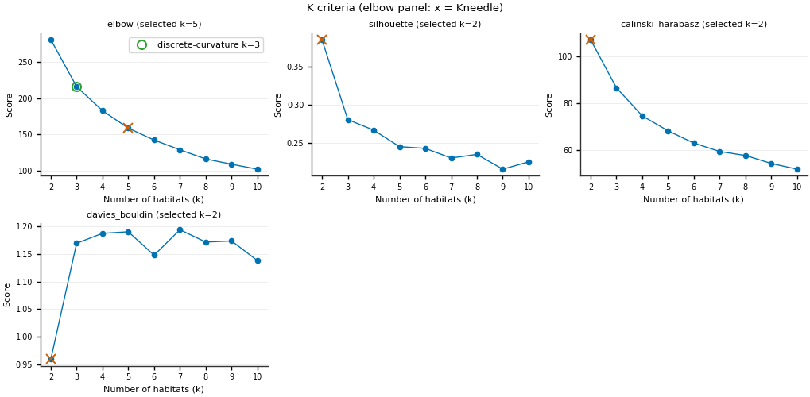
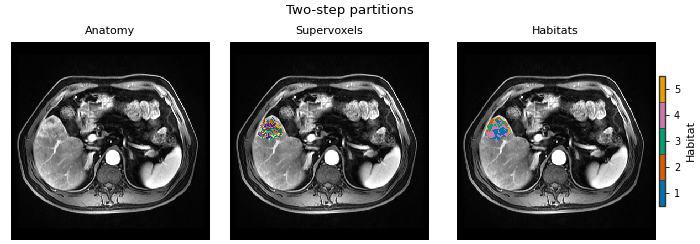
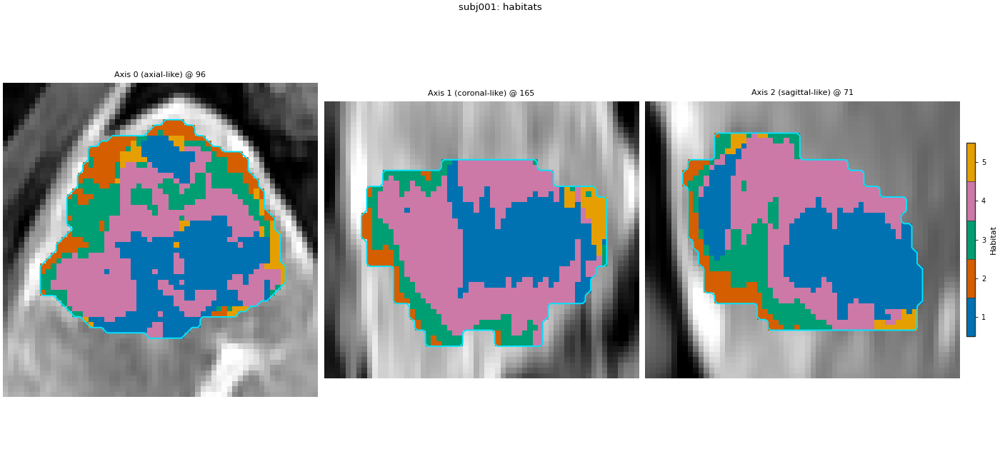
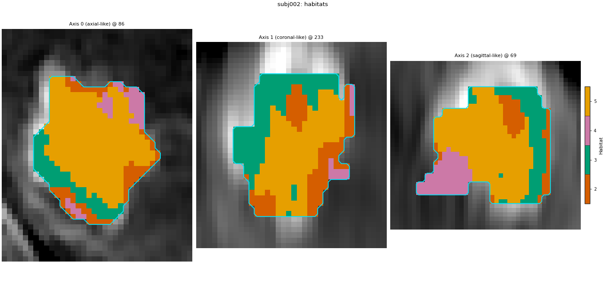
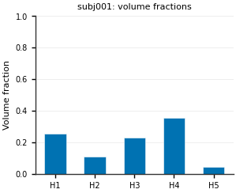
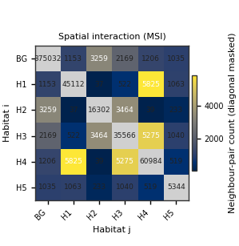
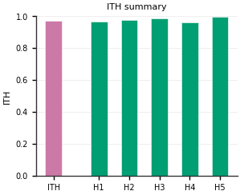
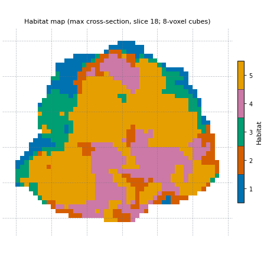
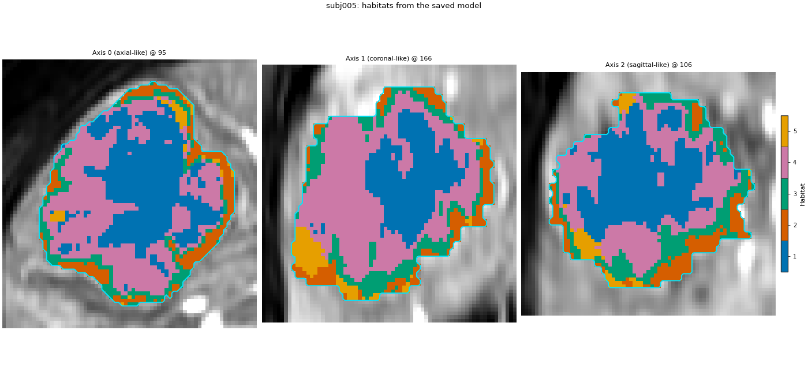

Note
Go to the end to download the full example code.
Quickstart: Python API#
Background. Habitat analysis splits a tumour into sub-regions that behave alike across the input images (here, DCE phases), then describes each tumour by how much of each sub-region it has and how they are arranged.
Purpose. You get your first habitat maps, a per-subject feature table (volume fractions, MSI, ITH, graph), and a saved model that labels a new patient without refitting.
Key terms.
habitat – a sub-region inside the tumour (the ROI) whose voxels behave alike across the input images; HABIT paints each ROI voxel with a habitat id (1, 2, 3, …).
ROI / mask – the region of interest, usually the whole tumour, stored as an integer mask; only voxels inside it are analysed (0 = background).
voxel feature – the numbers that describe one voxel (here its intensity in each DCE phase); one column per feature.
subject-level normalization – each patient’s features are rescaled with that patient’s own statistics before clustering. MR intensities are arbitrary units, so a darker scan would otherwise fall into one habitat. See Concepts.
supervoxel – a small patch of neighbouring voxels with similar features, clustered inside one subject first (
partition), so the cohort model clusters tens of rows per subject instead of every voxel.pool – stacks every training subject’s rows into one matrix so one model is fitted to the whole cohort and habitat ids mean the same thing in every patient.
fit – learns the habitat definition (for k-means: the number of habitats and their centroids).
assign – gives every supervoxel / voxel the id of its nearest centroid, producing the habitat map.
Stage / Spec / HabitatSpec – a
Stageis one step with a label you choose; aSpecnames a registered component and its parameters; aHabitatSpecis the ordered list of stages plusrandom_seed, i.e. the whole study definition.elbow – HABIT
validation="elbow"is Kneedle on inertia (Satopaa et al., 2011), not Thorndike’s (1953) informal elbow and not the pre-v1.0 discrete-curvature second-difference rule; see Building habitat maps.
Every term is defined at more length on Concepts.
A short list of stages declares the analysis; one call fits it on a cohort. Everything after that is looking at the result: the habitat map, the per-habitat features a paper would report, and reusing the fitted model on a new patient. No YAML.
Install first (Installation). This page uses the
official demo pack (five liver lesions, four DCE phases). Change DATA
/ MODALITIES / ROI to your own preprocessed tree.
Load the images#
Four subjects define the habitats; the fifth plays a new patient later. The downloaded pack is cached after the first run. sphinx_gallery_thumbnail_number = 4
from pathlib import Path
import matplotlib.pyplot as plt
import numpy as np
from habit.contracts import HabitatModel, cohort_from_directory
from habit.datasets import fetch_demo
from habit.kernels import habitat_ith_dispersion, ith_score, spatial_interaction_matrix
from habit.execution import backend_from_policy
from habit.recipes import Study
from habit.spec import HabitatSpec, Spec, Stage
from habit.spec.policy import RunPolicy
from habit.viz import (
plot_cluster_validation_from_report,
plot_habitat_graph_network_2d,
plot_habitat_graph_slice,
plot_habitat_overlay,
plot_habitat_volume_fractions,
plot_intensity_slice,
plot_ith_summary,
plot_msi_matrix,
plot_partition_triptych,
)
# Change DATA / MODALITIES / ROI to your preprocessed layout.
DATA = fetch_demo()
MODALITIES = ("pre_contrast", "LAP", "PVP", "delay_3min")
ROI = "LAP"
cohort = cohort_from_directory(DATA, modalities=MODALITIES, roi=ROI)
train, new_patient = cohort[:4], cohort[4:]
print(cohort)
subject = train[0]
Path("out").mkdir(exist_ok=True)
fig = plot_intensity_slice(
subject.image("LAP"),
roi_mask=subject.mask(ROI),
roi_contour=True,
image_label="LAP",
title=f"{subject.subject_id}: arterial phase and ROI",
)
fig.savefig("out/quickstart_input.png", dpi=150, bbox_inches="tight")
plt.show()

HABIT demo data (cached)
DATA (preprocessed root): C:\Users\dongm\.habit_data\demo-data-v1\preprocessed
On-disk inventory of this folder:
subjects (5): subj001, subj002, subj003, subj004, subj005
image series: LAP, PVP, delay_3min, pre_contrast
mask keys: LAP, PVP, delay_3min, pre_contrast
example image: images/subj001/delay_3min/WATER__BH_Ax_LAVA_Flex_3min_Series0012.nrrd
example mask: masks/subj001/delay_3min/WATER__BH_Ax_LAVA_Flex_10min_Series0017_mask.nrrd
Your own data must use the same folder tree (change IDs / series names):
DATA/
images/<subject_id>/<modality>/<one image file>
masks/<subject_id>/<roi>/<one mask file>
Then load it with the same call the demos use:
cohort = cohort_from_directory(DATA, modalities=("LAP",), roi="LAP")
Swap DATA / modalities / roi to match your tree. Mask key is often the
same as one image series (here LAP).
Cohort(5 subjects [subj001, subj002, subj003, subj004, subj005])
F:\work\habit_project\habit\viz\intensity.py:616: UserWarning: Display geometry conflict: image/anatomy direction does not match mask/label direction. Using the mask/label direction so coronal/sagittal superior-up follows the labelled anatomy. Pass direction= to override.
resolved_direction, resolved_spacing = resolve_display_geometry(
Build the analysis step by step#
A habitat analysis is a list of stages. This is the two-step design:
each tumour is normalized on its own scale, split into 30 supervoxels
(partition), the supervoxels of all subjects are put together
(pool) and clustered once (fit), so habitat 2 means the same
enhancement pattern in every patient. Drop pool and every subject
is clustered on its own (one-step); drop partition and voxels are
clustered directly (direct pooling). The fitter tries 2 to 10 habitats
and keeps the elbow.
spec = HabitatSpec(
name="quickstart_two_step",
stages=(
# extract: one intensity column per DCE phase, inside the ROI.
Stage("extract", Spec("raw", {"modalities": list(MODALITIES), "roi": ROI})),
# preprocess, preprocess2 (subject-level, before pool): clip each
# column to the patient's own 1st..99th percentile, then rescale it
# to 0..1 with the patient's own min and max. Nothing is stored.
Stage("preprocess", Spec("winsorize", {"winsor_limits": [0.01, 0.01]})),
Stage("preprocess2", Spec("zscore")),
# partition: 30 supervoxels per tumour; these rows are clustered.
Stage("partition", Spec("kmeans", {"n_supervoxels": 30})),
# pool: one matrix for every training subject, then one fit.
Stage("pool", Spec("pool")),
# No cohort-level preprocessing after pool (see subject z-score above).
# fit: search 2..10 habitats and keep the elbow. n_init=10 restarts.
Stage("fit", Spec("kmeans", {"min_habitats": 2, "max_habitats": 10, "validation": "elbow", "n_init": 10})),
# assign: nearest centroid writes the shared habitat ids.
Stage("assign", Spec("nearest_centroid")),
# quantify: one row per subject. Spec name is the feature family.
Stage("volume", Spec("volume")),
Stage("msi", Spec("msi")),
Stage("ith", Spec("ith_score")),
Stage("graph", Spec("graph", {"include_extended_metrics": False})),
),
# Seeds partition and fit. It is not a RunPolicy setting.
random_seed=0,
)
# Study runs the spec: fit_predict learns the habitats on the four training
# subjects and labels those same subjects in one call.
result = Study(spec).fit_predict(
train,
backend=backend_from_policy(
RunPolicy(backend="serial", on_subject_failure="continue")
),
)
print(result.habitat_model.summary())
Cohort.map[_ComputeUnits]: 0%| | 0/4 [00:00<?, ?it/s]
Cohort.map[_ComputeUnits]: 25%|██▌ | 1/4 [00:02<00:07, 2.55s/it]
Cohort.map[_ComputeUnits]: 50%|█████ | 2/4 [00:04<00:04, 2.07s/it]
Cohort.map[_ComputeUnits]: 75%|███████▌ | 3/4 [00:05<00:01, 1.87s/it]
Cohort.map[_ComputeUnits]: 100%|██████████| 4/4 [00:07<00:00, 1.78s/it]
Cohort.map[_ComputeUnits]: 100%|██████████| 4/4 [00:07<00:00, 1.78s/it]
Cohort.map[_AssignPrecomputedUnits]: 0%| | 0/4 [00:00<?, ?it/s]
Cohort.map[_AssignPrecomputedUnits]: 25%|██▌ | 1/4 [00:01<00:03, 1.08s/it]
Cohort.map[_AssignPrecomputedUnits]: 50%|█████ | 2/4 [00:01<00:01, 1.05it/s]
Cohort.map[_AssignPrecomputedUnits]: 75%|███████▌ | 3/4 [00:02<00:00, 1.13it/s]
Cohort.map[_AssignPrecomputedUnits]: 100%|██████████| 4/4 [00:03<00:00, 1.17it/s]
Cohort.map[_AssignPrecomputedUnits]: 100%|██████████| 4/4 [00:03<00:00, 1.17it/s]
HabitatModel kmeans-b01ecfd00139f26e
habitats : 5
features (4) : pre_contrast, LAP, PVP, delay_3min
defining cohort : n=4
modalities : pre_contrast, LAP, PVP, delay_3min
cohort digest : 81dc6515a9f2b393...
produced by : habitat_model_fitter.kmeans
habit version : 3.0.0
random seed : 0
preprocessing state: inertia, selection_report, validation
How many habitats, and why#
HABIT validation elbow is the same rule as kneedle. It runs
KneeLocator on k-means inertia (within-cluster sum of squares),
curve convex, direction decreasing (Satopaa, Albrecht, Irwin, and
Raghavan, 2011, Finding a “Kneedle” in a Haystack, IEEE ICDCS).
Normalize k and inertia to the unit square, draw the chord from the
first point to the last, and take the k farthest from that chord; a
smooth curve often places this knee to the right of the bend a person
sees. Literature “elbow” means inspecting within-cluster dispersion
versus k (Thorndike RL, 1953, Who belongs in the family?, Psychometrika
18(4):267-276) — not a second-difference formula. The discrete-curvature
elbow (visual elbow, computed) maximizes the second difference of
inertia (HABIT pre-v1.0 elbow); it is not a Thorndike formula. The
habitat map keeps the Kneedle K; other Ks are only in the table below.
Full comparison: Clustering algorithm and number of habitats.
report = result.habitat_model.preprocessing_state["selection_report"]
candidates = [int(k) for k in report["candidates"]]
inertia = np.asarray(report["scores"][report["methods"][0]], dtype=float)
def discrete_curvature_elbow_k(cluster_range, inertia_scores):
"""Return k maximizing the second difference of inertia (pre-v1.0 elbow)."""
values = np.asarray(inertia_scores, dtype=float)
cluster_range = [int(k) for k in cluster_range]
if values.size < 3:
return int(cluster_range[int(np.argmin(values))])
return int(cluster_range[int(np.argmax(np.diff(values, n=2))) + 1])
k_kneedle = int(result.habitat_model.n_habitats)
k_discrete = discrete_curvature_elbow_k(candidates, inertia)
from habit.habitat_model import KMeansHabitatModelFitter
_k_table = {"elbow_kneedle": k_kneedle, "discrete_curvature_elbow": k_discrete}
for _name in ("silhouette", "calinski_harabasz", "davies_bouldin"):
_fitter = KMeansHabitatModelFitter(
min_habitats=2, max_habitats=10, validation=_name, n_init=10
)
_fitter.set_random_state(0)
_k_table[_name] = _fitter.fit(result.units, cohort=train).n_habitats
print(
"K by criterion (elbow/kneedle=Kneedle; sil/CH maximize; DB minimize; "
"discrete-curvature=max second diff of inertia):"
)
for _name, _k in _k_table.items():
print(f" {_name}: {_k}")
print(f"habitat map uses Kneedle K = {k_kneedle}")
# Plot every supported k-means criterion (skip gap: expensive on this page).
_criteria = ("elbow", "silhouette", "calinski_harabasz", "davies_bouldin")
_vote = KMeansHabitatModelFitter(
min_habitats=2, max_habitats=10, validation=list(_criteria), n_init=10
)
_vote.set_random_state(0)
_vote_report = dict(
_vote.fit(result.units, cohort=train).preprocessing_state["selection_report"]
)
_vote_report["selected"] = {
"elbow": k_kneedle,
"silhouette": _k_table["silhouette"],
"calinski_harabasz": _k_table["calinski_harabasz"],
"davies_bouldin": _k_table["davies_bouldin"],
}
fig = plot_cluster_validation_from_report(
_vote_report,
title="K criteria (elbow panel: x = Kneedle)",
)
fig.axes[0].plot(
k_discrete,
float(inertia[candidates.index(k_discrete)]),
marker="o",
markersize=8,
markerfacecolor="none",
markeredgecolor="C2",
markeredgewidth=1.4,
linestyle="none",
label=f"discrete-curvature k={k_discrete}",
)
fig.axes[0].legend(loc="best", fontsize=8)
fig.savefig("out/quickstart_elbow.png", dpi=150, bbox_inches="tight")
plt.show()

K by criterion (elbow/kneedle=Kneedle; sil/CH maximize; DB minimize; discrete-curvature=max second diff of inertia):
elbow_kneedle: 5
discrete_curvature_elbow: 3
silhouette: 2
calinski_harabasz: 2
davies_bouldin: 2
habitat map uses Kneedle K = 5
Habitat maps#
From supervoxels to habitats on one slice, then the habitat map of two patients. Same colour, same habitat, in both.
habitat_map = result.habitat_maps[0]
fig = plot_partition_triptych(subject.image("LAP"), result.units[0], habitat_map, axis=0)
fig.savefig("out/quickstart_triptych.png", dpi=150, bbox_inches="tight")
plt.show()
for other in (0, 1):
fig = plot_habitat_overlay(
train[other].image("LAP"),
result.habitat_maps[other],
title=f"{train[other].subject_id}: habitats",
crop_to="labels",
)
fig.savefig(f"out/quickstart_habitats_{train[other].subject_id}.png", dpi=150, bbox_inches="tight")
plt.show()



F:\work\habit_project\habit\viz\habitat_core.py:1110: UserWarning: Display geometry conflict: image/anatomy direction does not match mask/label direction. Using the mask/label direction so coronal/sagittal superior-up follows the labelled anatomy. Pass direction= to override.
resolved_direction, resolved_spacing = resolve_display_geometry(
F:\work\habit_project\habit\viz\habitat_overlay.py:806: UserWarning: Display geometry conflict: image/anatomy direction does not match mask/label direction. Using the mask/label direction so coronal/sagittal superior-up follows the labelled anatomy. Pass direction= to override.
resolved_direction, resolved_spacing = resolve_display_geometry(
F:\work\habit_project\habit\viz\habitat_overlay.py:806: UserWarning: Display geometry conflict: image/anatomy direction does not match mask/label direction. Using the mask/label direction so coronal/sagittal superior-up follows the labelled anatomy. Pass direction= to override.
resolved_direction, resolved_spacing = resolve_display_geometry(
The feature table#
One row per subject, ready for statistics: volume fractions, the MSI (how habitats touch each other), the ITH score (how fragmented the tumour is) and graph topology. A few of the columns:
table = result.features.frame.set_index("subject")
print(table.shape[1], "columns")
columns = [c for c in table.columns if c.endswith("_volume_fraction")] + ["ith_score", "contrast", "graph_num_nodes_total"]
print(table[columns].round(3).to_string())
663 columns
habitat_1_volume_fraction habitat_2_volume_fraction habitat_3_volume_fraction habitat_4_volume_fraction habitat_5_volume_fraction ith_score contrast graph_num_nodes_total
subject
subj001 0.258 0.112 0.231 0.355 0.044 0.972 1.747 501.0
subj002 0.058 0.081 0.202 0.446 0.213 0.911 2.897 149.0
subj003 0.210 0.147 0.277 0.361 0.006 0.828 1.766 75.0
subj004 0.274 0.069 0.297 0.296 0.063 0.851 2.299 130.0
What those numbers look like for one subject#
Volume fractions come straight from the table. MSI and ITH are drawn from the same label map with the kernels the table uses.
labels = habitat_map.label_array
fractions = {hid: float(table.loc[subject.subject_id, f"habitat_{hid}_volume_fraction"]) for hid in habitat_map.habitat_ids}
fig = plot_habitat_volume_fractions(fractions, title=f"{subject.subject_id}: volume fractions")
fig.savefig("out/quickstart_volume_fractions.png", dpi=150, bbox_inches="tight")
plt.show()
n_classes = max(habitat_map.habitat_ids) + 1
fig = plot_msi_matrix(spatial_interaction_matrix(labels, n_classes=n_classes), habitat_ids=habitat_map.habitat_ids)
fig.savefig("out/quickstart_msi.png", dpi=150, bbox_inches="tight")
plt.show()
fig = plot_ith_summary(float(ith_score(labels)), dispersion=habitat_ith_dispersion(labels))
fig.savefig("out/quickstart_ith.png", dpi=150, bbox_inches="tight")
plt.show()



Graph network features: the habitat layout as a network#
Volume fractions say how much of each habitat a tumour has; they do not say how the habitats are laid out. The graph features are HABIT’s own family for that. HABIT turns each habitat into a network and measures its shape:
nodes – the ROI is covered by a lattice of 8 x 8 x 8-voxel cubes. Inside each cube, every connected piece of one habitat becomes one node, placed at that piece’s centre.
edges – two nodes are joined when their closest voxels are at most 5 voxels apart (distances in voxels, not millimetres).
single_h<i>_* columns describe the network of habitat i alone (for example
single_h1_connected_componentscounts separate islands of habitat 1;single_h1_n_nodesandsingle_h1_n_edgesits size). pair_h<i>_h<j>_* columns describe how habitats i and j meet (for examplepair_h1_h2_n_edgescounts links between them).graph_num_nodes_totalis the node count over all habitats.
include_extended_metrics=False (set in the graph stage above)
skips the efficiency, small-world and rich-club summaries, which need
many random reference graphs and are much slower. Node and edge rules
are options of the graph component (for example
node_method="component" and edge_method="adjacency"); more on
Habitat graph network features.
graph_columns = [c for c in table.columns if c.startswith(("single_h", "pair_h", "graph_"))]
print(len(graph_columns), "graph columns")
example_columns = [
"graph_num_nodes_total",
"single_h1_n_nodes",
"single_h1_n_edges",
"single_h1_connected_components",
"pair_h1_h2_n_edges",
]
print(table[example_columns].round(3).to_string())
# The lattice view: the 8-voxel grid and each habitat inside it on the
# largest cross-section. The network view draws, per habitat and per
# habitat pair, the nodes (white dots) and edges (white lines) that the
# features are built with, drawn on that one slice for display; the
# feature columns come from the full 3-D map. Both take the label array.
fig = plot_habitat_graph_slice(labels, block_size=8)
fig.savefig("out/quickstart_graph.png", dpi=150, bbox_inches="tight")
plt.show()
fig = plot_habitat_graph_network_2d(labels, block_size=8)
if fig is not None:
fig.savefig("out/quickstart_graph_network.png", dpi=150, bbox_inches="tight")
plt.show()


608 graph columns
graph_num_nodes_total single_h1_n_nodes single_h1_n_edges single_h1_connected_components pair_h1_h2_n_edges
subject
subj001 501.0 94.0 489.0 4.0 220.0
subj002 149.0 14.0 42.0 3.0 10.0
subj003 75.0 20.0 65.0 1.0 14.0
subj004 130.0 27.0 94.0 1.0 76.0
How to read the graph features#
More nodes for a habitat means it covers more lattice cubes; more
connected_components for the same habitat means it is broken into
separate islands rather than one compact region. Many pair edges
between two habitats mean they interleave along a long shared border.
Size-dependent columns also have *_norm / *_per_habitat_volume
companions so tumours of different size can be compared.
Reuse the model on a new patient#
The .habitatmodel file is the habitat definition: load it anywhere
and the new patient gets the same habitat names. Nothing is refitted:
the new patient is normalized with its own statistics, binned with the
training bin edges stored in the model, and matched to the training
centroids.
save writes the model archive and result tables under out/quickstart,
plus the habitat maps because write_maps=True.
result.save("out/quickstart", write_maps=True)
model = HabitatModel.load("out/quickstart/habitat_model.habitatmodel")
# predict labels the held-out fifth subject with the saved centroids.
prediction = Study.from_model(model).predict(new_patient)
fig = plot_habitat_overlay(
new_patient[0].image("LAP"),
prediction.habitat_maps[0],
title=f"{new_patient[0].subject_id}: habitats from the saved model",
crop_to="labels",
)
fig.savefig("out/quickstart_new_patient.png", dpi=150, bbox_inches="tight")
plt.show()

Cohort.map[_LabelAndDescribe]: 0%| | 0/1 [00:00<?, ?it/s]
Cohort.map[_LabelAndDescribe]: 100%|██████████| 1/1 [00:05<00:00, 5.59s/it]
Cohort.map[_LabelAndDescribe]: 100%|██████████| 1/1 [00:05<00:00, 5.59s/it]
F:\work\habit_project\habit\viz\habitat_overlay.py:806: UserWarning: Display geometry conflict: image/anatomy direction does not match mask/label direction. Using the mask/label direction so coronal/sagittal superior-up follows the labelled anatomy. Pass direction= to override.
resolved_direction, resolved_spacing = resolve_display_geometry(
Where to go next#
The same analysis from a YAML file and from the shell with
habit get-habitat --config config/habitat/config_habitat_quickstart_v1.yaml: Quickstart: YAML and CLI. Both fit the same four subjects and give the same habitat maps as this page.Complete analyses, one research scenario per page: Building habitat maps; start with Two-step habitats with a Spec.
The graph features in depth: Habitat graph network features.
Terms (supervoxel, subject-level vs cohort-level): Concepts.
Interactive 3-D view (
pip install "habitat-analysis[view]"):from habit.viz import view_habitat_napari view_habitat_napari(subject.image("LAP"), habitat_map)
Total running time of the script: (0 minutes 31.072 seconds)